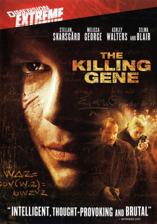

gesehen am 12.10.2017
gesehen am 12.10.2017Alternativ: The Killing Gene (Englischer Titel) gesehen am 12.10.2017
 
 IMDB-Wertung: 5.7 / 10
IMDB-Wertung: 5.7 / 10  Metascore:
Metascore: 
A series of deaths have started occurring in New York; Some are being found mutilated while others have an equation wÎ"z = Cov (w,z) = ÃwzVz carved onto their skin. As police investigate they discover each victim was forced to choose between sacrificing their own life or a loved ones' life. Before long it becomes clear that this perpetrator has suffered just such a similar fate...so now is coping by seeking a way of solving this philosophical enigma, can Captain Maclean and his officers such as Eddie Argo and his new partner Helen Westcott stop this suspect, because he/she won't not until he/she gets to the end of this equation.
Jahr: 2007
Dauer: 103 Minuten
FSK: 18
Land: England Studio: SquareOne EntertainmentTonspuren: DD5.1 - ,
Untertitel: Deutsch,
Auflösung: 1080p (1920x816) Größe: 8509 MB
Genre: Thriller, Horror, Drama, Krimi
Regisseur: Tom Shankland
Drehbuch: Clive Bradley
Soundtrack:
Darsteller:
 Stellan Skarsgård als Eddie Argo
Stellan Skarsgård als Eddie Argo Melissa George als Helen Westcott
Melissa George als Helen Westcott Ashley Walters als Daniel Leone
Ashley Walters als Daniel Leone Tom Hardy als Pierre Jackson
Tom Hardy als Pierre Jackson Paul Kaye als Dr. Gelb
Paul Kaye als Dr. Gelb John Sharian als Jack Corelli
John Sharian als Jack Corelli Selma Blair als Jean Lerner
Selma Blair als Jean Lerner Sally Hawkins als Elly Carpenter
Sally Hawkins als Elly Carpenter Michael Wildman als O'Hare
Michael Wildman als O'Hare Laurence Doherty als NYPD Detective , uncredited
Laurence Doherty als NYPD Detective , uncreditedDatei: X:\FSK18-2000-2009\WAZ - Welche Qualen erträgst du (2007, FSK18, 1920x816).mkv seit 09.10.2017
Festplatte: FSK18
 Es gibt insgesamt 106 Filme in der Gruppe 'FSK18-2000-2009'
Es gibt insgesamt 106 Filme in der Gruppe 'FSK18-2000-2009'